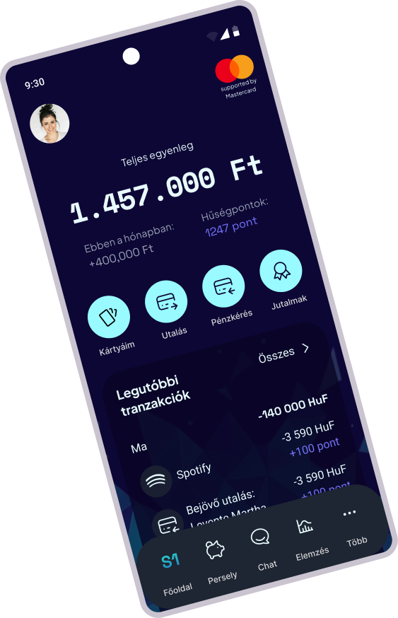
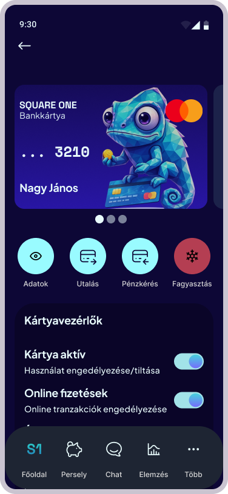
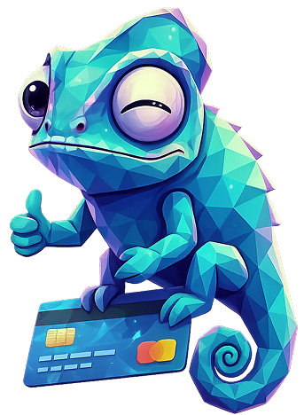
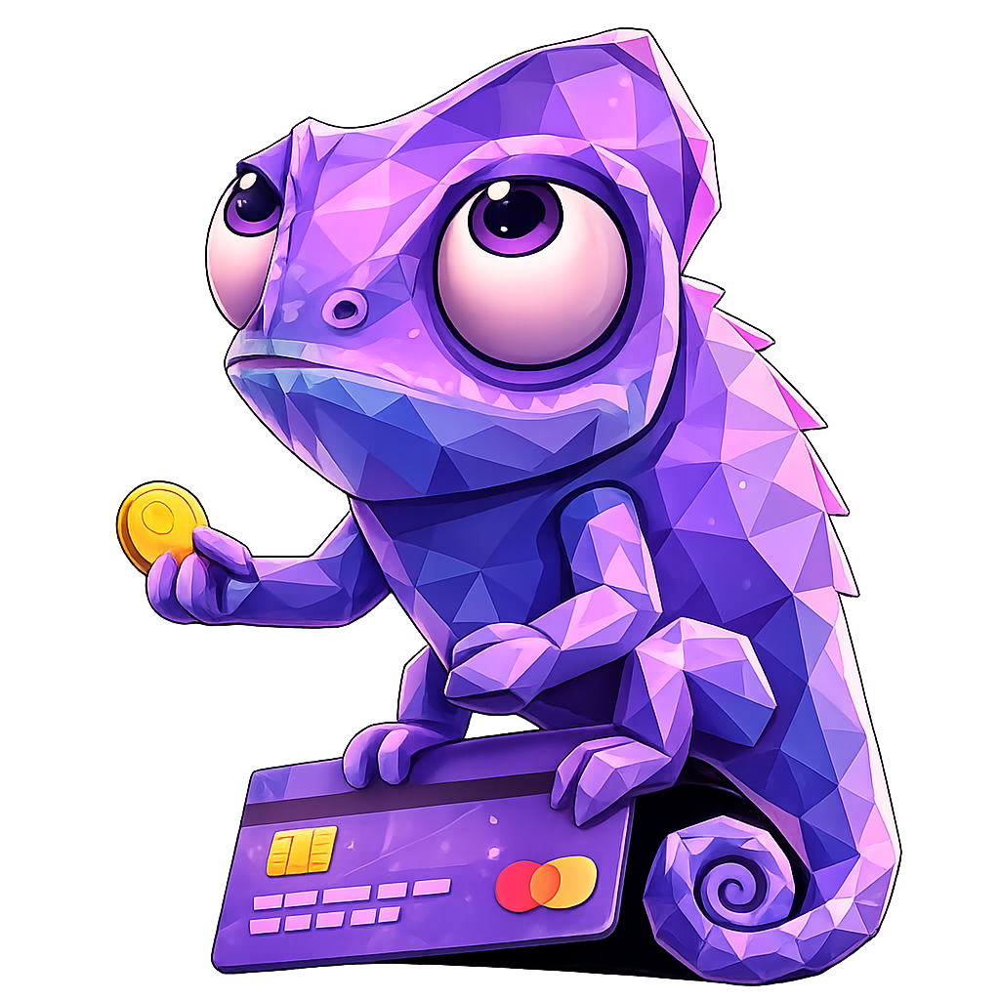
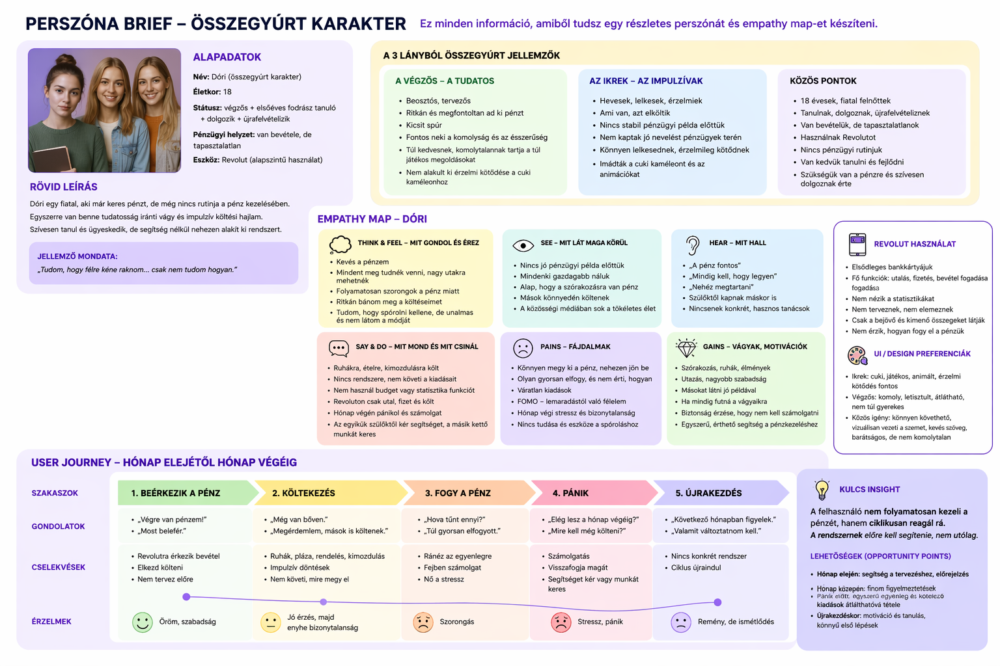
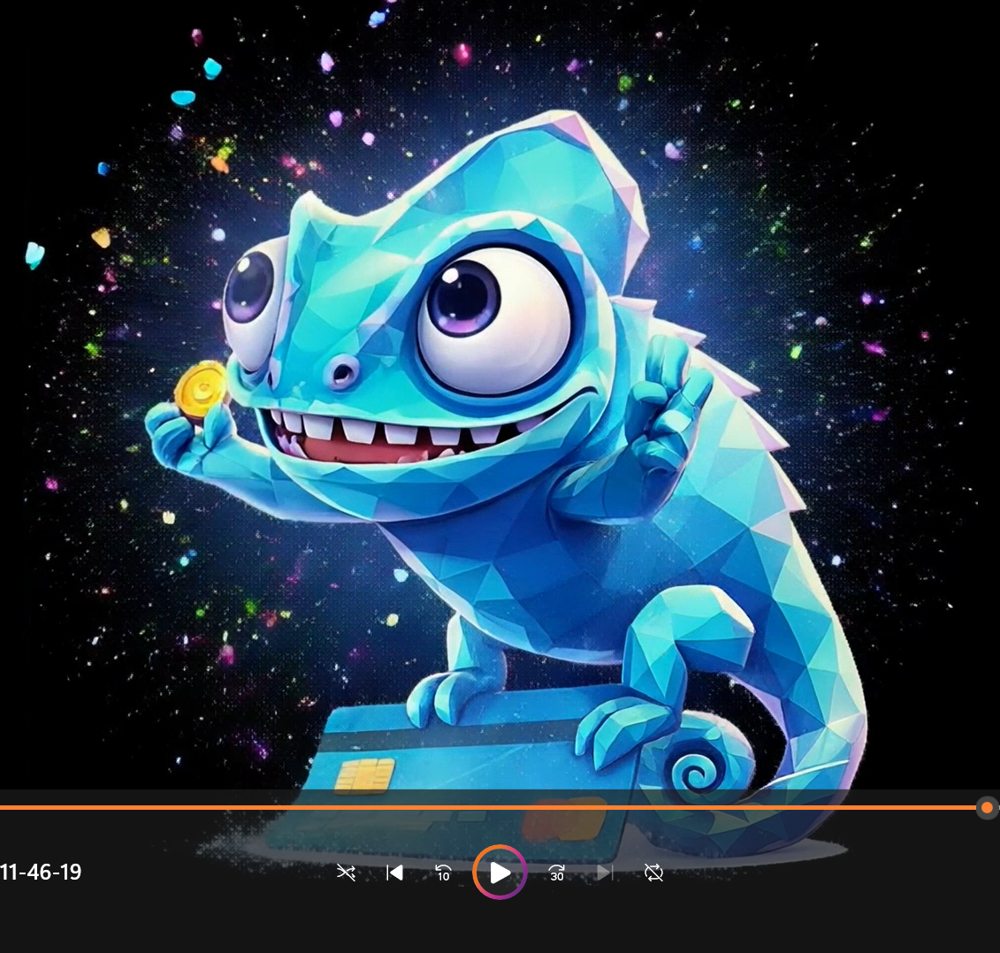
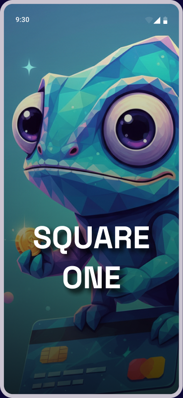
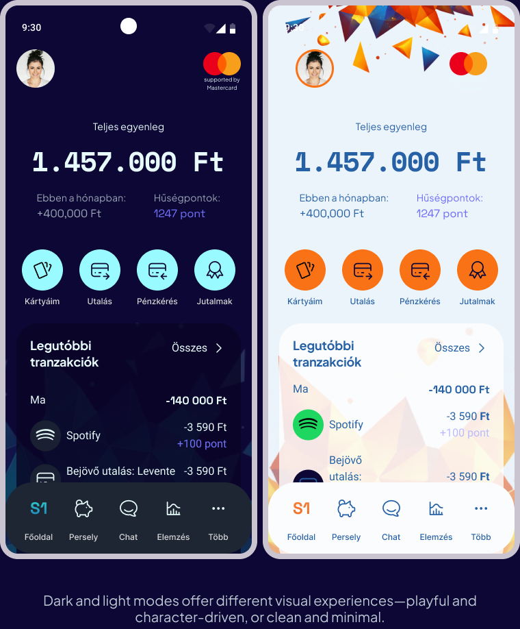
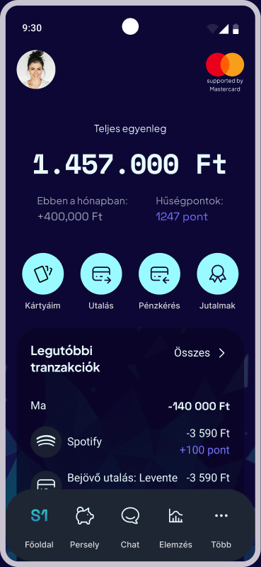

A fintech app designed to make money management approachable for younger users.


Overview
Square One is a conceptual fintech app for users
aged 16, 28, designed to make financial
management accessible and engaging.
I conducted in-depth interviews with 3 users (aged 18–28), all active mobile banking users managing finances daily.
Research goals:
Findings were synthesized into an empathy map, surfacing deeper motivations beyond explicit answers, especially around financial confidence and the fear of being judged for not knowing enough.


Key insights:
THE CHALLENGE
Research findings were synthesized into a structured design framework across three layers.
Personas
Two behavioral personas were developed from interview data and the empathy map:
Grounded in observed patterns, not demographic assumptions.
Meet Dóri
Financially Inexperienced Young Adult
Dóri
Eager student, worker & re-applicant
“
I know I should be saving…
I just don’t know how.
DEMOGRAPHICS
BACKGROUND
Dóri is 18 years old, a graduating hairdressing student who works part-time and is re-applying to university. She has her own income but very little financial experience.
She uses Revolut as her primary account — her salary comes in, she transfers and spends. She wants to get better at managing money so she doesn’t have to constantly worry at the end of the month.
GOALS
FRUSTRATIONS
TECHNOLOGY
KNOWN APPS
Revolut Instagram Spotify TemuMeet Kata
The Digital Balance Seeker
Kata
Digital Balance Seeker
“
I want a simple, clear picture of my finances — without having to become an accountant.
DEMOGRAPHICS
BACKGROUND
Kata is a self-employed freelancer who manages her finances across multiple platforms every day. She’s had only partial success with fintech apps. Frustrated because her data is scattered and invoicing feels chaotic.
She wants to see everything in one reliable place — visually and quickly.
GOALS
FRUSTRATIONS
TECHNOLOGY
KNOWN APPS
Revolut Számlázz.hu Google Sheets InstagramUser Journey
Two complementary journey maps were built to ground decisions in real behavior:
Together they revealed the core issue: not a broken screen, but a repeating stress pattern the product should help break.
Lépések
Mik a fő lépései a felhasználó útjának?
Mit csinál
Mit csinál a felhasználó a különböző szakaszokban?
Gondolatok
és érzések
Érzések és gondolatok az egyes fázisokban.
Problémák
Mi a probléma? Mi okozza? Mennyire komoly?
Lehetőségek
Hogyan tudnánk megoldani a problémákat?
Előkészítés,
tervezelés
Onboarding,
első lépések
Ügyfélkép,
főbb feladatok
Alkalmazott
feladatok
Hatékonyság-
növelés
Felhasználói igényeket felméri
Összehasonlítja az elérhető appokat
Átnézi a Revolut funkcióit online
Letölti az appot
Regisztrál
Megismeri az app funkcióit
Összegyűjti pénzügyi kapcsolatait
másolja a számlázz mot
Aktiválja a kártyáját
Jó vibes: az app segít az áttekintésben
Számlázó rendszert kapcsol össze
Riportokat generál
Adatokat tölt fel manuálisan
Több platformot kezel egyszerre
Automatizálási lehetőségeket keres
Ütemezi a kifizetéseket
Beállítja kártya limitjét
Újabb fizetési módot tölt le
😐
😊
😊
😞
😡
Hova ment az összes pénzem?
Az app intuitív — könnyebb mint vártam!
A pénzügy nem is olyan rettentő…
Már megint nem találom, amit keresek.
„Borzasztó értesítések minden tranzakcióról.”
Túl sok idő szükséges a kereséshez
Unalmas, jobb lehetőségeket vár
Nem annyira értheő az app
Nem igazán otthon a digitális bankokban
Nem érti hogyan kell számlát exportálni
A pénznemváltás zavaros
Nehezen találja ezeket a funkciókat az appban
Elveszetten érzi magát a beállításokban
nem fér a pénzéhez
Lassú a folyamat
Csak a legfontosabb infókat emeljük ki az első megnyitásnál
Könnyű tranzakciós kezelés
Gyors átváltás
Feltölt, ugyanaz
Azonnali grafikon
Értesítés az utalásról
Egyszerűsített funkció-navigáció, keresősáv
könnyű kártya letöltés
Automatikus havi összesitő

Job Statement
Using the Jobs to be Done framework, the core user need was distilled into one statement:
Job statement
Amikor, én Kata, egyetemista és dolgozó lány, a pénzügyeimet kezelem, azt szeretném, hogy gyorsan és biztonságosan tehessem ezt, egyszerűen átlátva a kapcsolódó funkciókat, azért hogy magabiztosan kézben tudjam tartani a pénzügyeimet és tudatos döntéseket hozhassak.
Key insight:
Users do not manage their finances continuously; they react to them in cycles. The system should support them proactively, not retrospectively.
OPPORTUNITY POINTS
How Might We questions
Ideation started with competitive analysis of Revolut, Wise, OTP, and Erste — reviewing UX flows, navigation patterns, and emotional engagement strategies. Mastercard brand guidelines were also integrated.
Key decisions:

The high-fidelity prototype was built in Figma in both dark and light mode. Dark mode is the primary experience, confirmed as preferred by the target demographic.
Design system highlights:
Testing ran in two rounds, each informing specific design decisions.
Round 1 — Mentor review (3 mentors):
Round 2 — Design community feedback:
Colors were derived from the character to create a cohesive and emotionally engaging experience. The palette balances playfulness with trust, avoiding overly "corporate" fintech visuals.
Space Grotesk was used for key numbers and headings to create a strong visual focus and improve scannability. "Your money, your way."
Plus Jakarta Sans was chosen for body text due to its high readability and clean appearance, supporting a clear and accessible user experience.
Every screen shows only what the user needs right now
Charts guide the eye first, numbers are there to confirm
Every transaction is traceable, nothing hidden
Key Screens



Onboarding: Offering two onboarding paths supports different user preferences—playful guidance or a more traditional experience.
Dark & light: Dark and light modes offer different visual experiences—playful and character-driven, or clean and minimal.
Cards, savings & chat: Card management features Kami as a visual brand element on the card itself. The savings jar makes goal-based saving tangible and motivating. The chat assistant – powered by Kami – guides users through banking tasks in a friendly, conversational way.